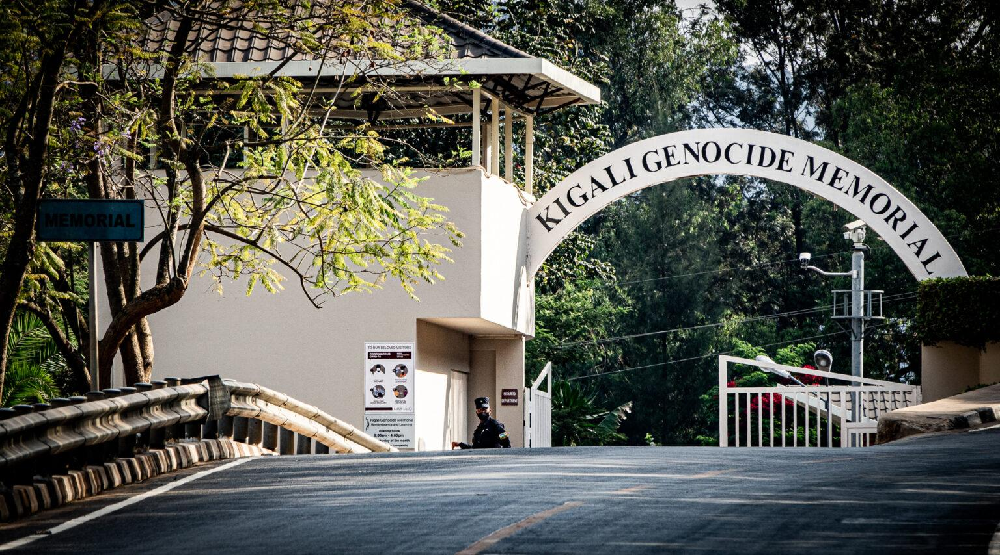
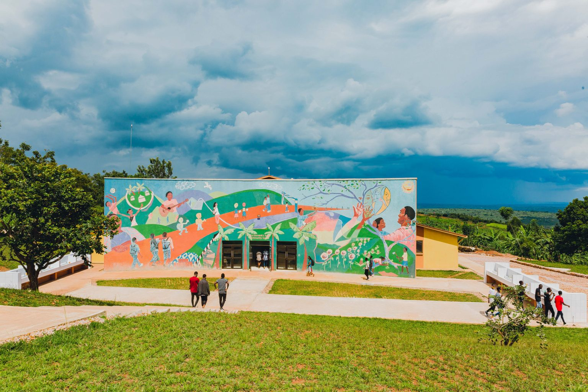
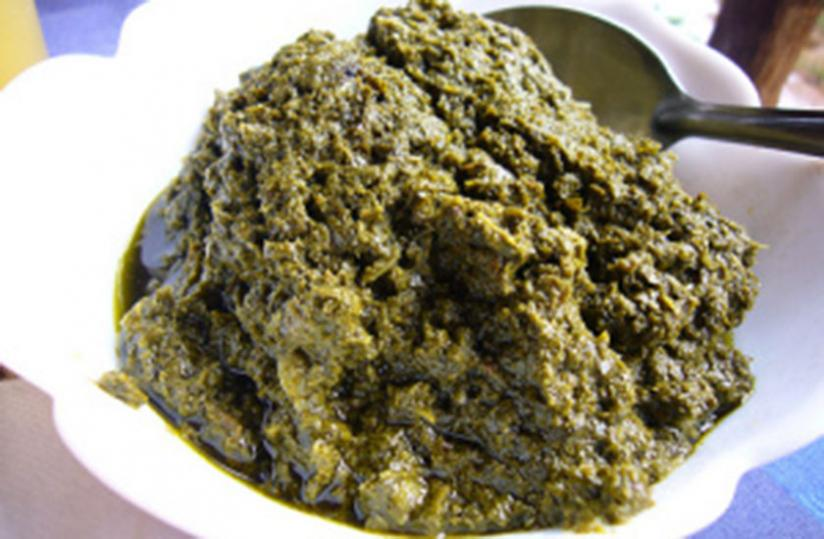
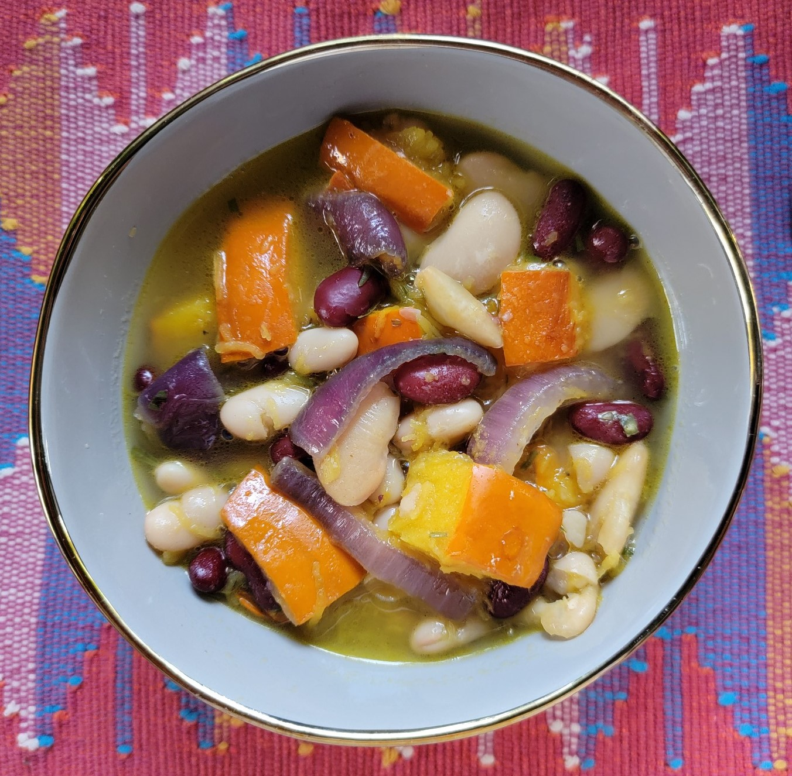
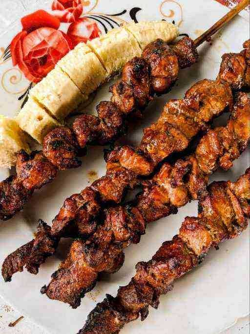

Historique
L'histoire et la culture de Kigali sont marquées par une diversité ethnique riche et une histoire complexe. Avant la colonisation, les Tutsis, les Hutus et les Twa coexistaient souvent en harmonie. Cependant, l'arrivée des colons européens a exacerbé les divisions ethniques, menant finalement au génocide rwandais de 1994. Depuis lors, Kigali et le Rwanda se sont engagés dans un processus de guérison et de reconstruction, mettant l'accent sur l'unité nationale et la réconciliation. Aujourd'hui, Kigali est une ville moderne et dynamique, préservant son héritage culturel tout en célébrant sa diversité ethnique à travers une scène artistique florissante, des festivals culturels vibrants et une cuisine variée.
Places emblématiques

Le Mémorial du génocide
Le Mémorial du génocide de Kigali est un lieu poignant et émouvant qui rend hommage aux victimes du génocide rwandais de 1994. Situé dans la capitale du Rwanda, ce mémorial offre aux visiteurs une plongée profonde dans l'histoire tragique de cette période sombre. À travers des expositions détaillées, des témoignages poignants et des artefacts poignants, il raconte l'histoire des atrocités commises et rend hommage aux millions de vies perdues. Les jardins paisibles et les espaces de réflexion offrent aux visiteurs un endroit pour se recueillir et honorer la mémoire des victimes. Le Mémorial du génocide de Kigali joue un rôle crucial dans l'éducation et la sensibilisation du public sur les horreurs du génocide, tout en soulignant l'importance de la prévention et de la réconciliation pour construire un avenir meilleur.
Le musée national du Rwanda
Le musée national du Rwanda, situé à Kigali, est un trésor culturel qui offre un aperçu fascinant de l'histoire et de la diversité du pays. À travers ses expositions variées, il met en lumière l'archéologie, l'ethnographie, l'art et l'histoire naturelle du Rwanda. Les visiteurs peuvent découvrir des artefacts uniques, des objets d'art traditionnels et des témoignages historiques qui racontent l'histoire riche et complexe du pays. Ce musée captivant est un lieu d'apprentissage et de découverte pour les Rwandais et les visiteurs internationaux, offrant une compréhension approfondie de la culture et de l'identité rwandaises. Avec son engagement envers l'éducation et la préservation du patrimoine, le musée national du Rwanda joue un rôle important dans la promotion de la culture et de l'histoire du pays.

Le Centre des Jeunes Agahozo-Shalom
Le Centre des Jeunes Agahozo-Shalom : Ce centre, situé dans le district de Rwamagana à proximité de Kigali, est une institution unique dédiée à l'éducation et à l'autonomisation des jeunes rwandais. Fondé sur le principe du tikkun olam (réparer le monde en hébreu), le centre offre un environnement sûr et stimulant où les jeunes peuvent acquérir des compétences académiques, professionnelles et personnelles. Avec des programmes éducatifs, des activités sportives et des projets communautaires, le Centre des Jeunes Agahozo-Shalom joue un rôle crucial dans la transformation des vies des jeunes Rwandais et dans la construction d'un avenir meilleur pour le pays.

Le Kigali Marriott Hotel
Le Kigali Marriott Hotel est une oasis de luxe au cœur de la capitale rwandaise. Niché dans le quartier central de Kigali, cet établissement cinq étoiles offre une expérience de séjour inégalée pour les voyageurs les plus exigeants. Avec ses chambres élégamment décorées, ses suites somptueuses et ses vues imprenables sur la ville, chaque moment passé à l'hôtel est une expérience mémorable. Les restaurants gastronomiques de l'hôtel proposent une cuisine raffinée mettant en valeur les saveurs locales et internationales, tandis que le spa de classe mondiale offre un havre de paix et de relaxation. Que ce soit pour les voyageurs d'affaires ou les touristes en quête de luxe, le Kigali Marriott Hotel offre un service impeccable et des équipements haut de gamme, garantissant un séjour inoubliable à chaque visite.
Plats locaux
L'isombe
L'isombe est un plat traditionnel rwandais très apprécié, préparé à partir de feuilles de manioc ou d'igname cuites avec de l'huile de palme, des arachides, des oignons et des épices. Cette préparation crée une texture crémeuse et un goût délicieusement terreux, caractéristiques de l'isombe. Ce plat est souvent servi avec de l'ugali (bouillie de maïs), du riz ou du mizuzu (pâte de manioc), créant ainsi un repas équilibré et nourrissant. L'isombe est apprécié pour sa saveur unique et réconfortante, ainsi que pour sa capacité à rassembler les familles et les communautés autour de la table. C'est un élément important de la cuisine rwandaise, offrant un lien avec les traditions culinaires ancestrales et un symbole de l'hospitalité rwandaise.

L'Ibihaza
Ce plat traditionnel rwandais est préparé à partir de bananes vertes pilées et mélangées avec du haricot (isombe), de l'huile de palme, des épices et des herbes aromatiques. La préparation est ensuite cuite lentement jusqu'à obtenir une texture crémeuse et un goût riche et parfumé. L'Ibihaza est souvent servi comme plat principal, accompagné de riz ou de bouillie de maïs (ugali), et peut également être agrémenté de viande ou de poisson. Ce plat est apprécié pour sa saveur unique, sa consistance crémeuse et son caractère réconfortant, faisant de lui un incontournable de la cuisine rwandaise à Kigali.

Les brochettes de Kigali
Les brochettes de Kigali sont un mets emblématique de la cuisine rwandaise, particulièrement populaire dans la capitale. Ces brochettes sont préparées en enfichant des morceaux de viande marinée sur des brochettes en bois ou en métal, puis grillées sur des braises ou dans un barbecue jusqu'à ce qu'elles soient dorées et tendres. La viande utilisée peut être du bœuf, de l'agneau, du poulet ou même du chèvre, selon les préférences. Avant la cuisson, la viande est souvent marinée dans un mélange d'épices locales, d'huile et parfois de jus de citron pour lui donner encore plus de saveur. Les brochettes de Kigali sont souvent servies avec une sauce piquante à base de piments, d'oignons et de tomates, ainsi que des accompagnements tels que du pain, des frites ou des légumes grillés. Elles sont un régal apprécié des habitants et des visiteurs de Kigali, offrant une expérience culinaire savoureuse et conviviale.
